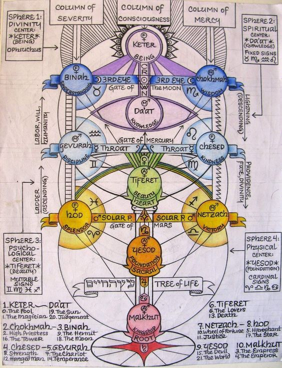
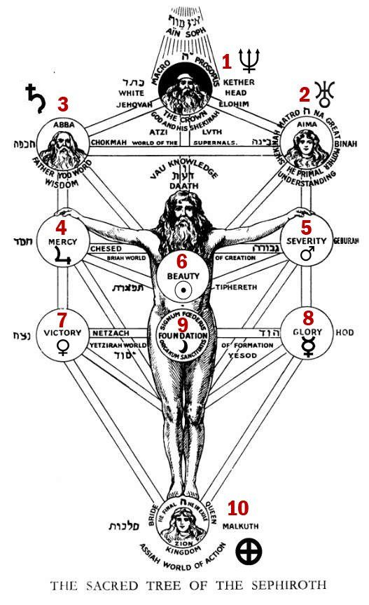
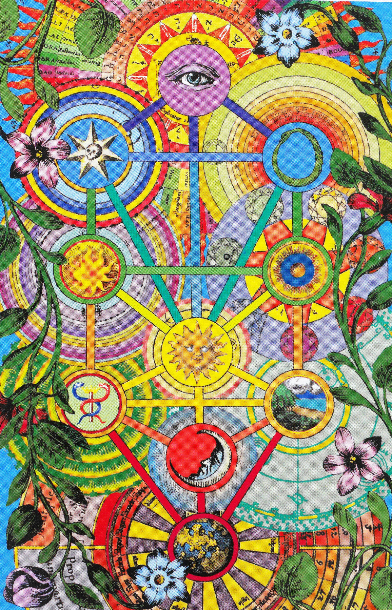
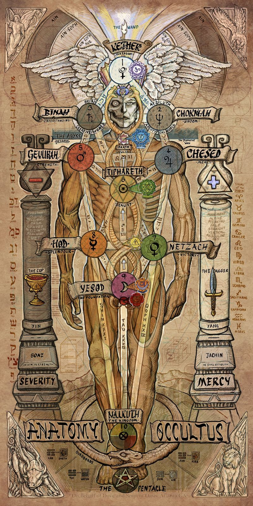
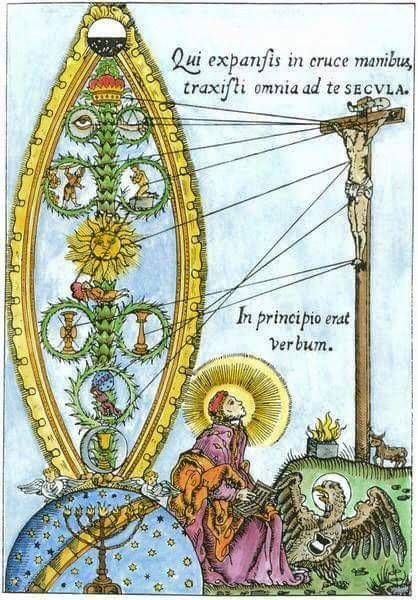
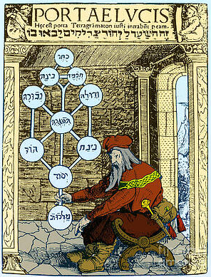

A Árvore da Vida
Prefácio
A Árvore da Vida é composta por 10 sefirot (esferas) que representam diferentes aspectos de Deus e da existência. Estes sefirot estão conectados por 22 caminhos, que correspondem às 22 letras do alfabeto hebraico e aos 22 arcanos maiores do Tarot.
Sefirot (Esferas)
• Kether (Coroa): Unidade divina, a fonte de toda criação.
• Chokmah (Sabedoria): O princípio masculino da criação.
• Binah (Entendimento): O princípio feminino da criação.
• Chesed (Misericórdia): Amor e compaixão divinos.
• Gevurah (Força): Julgamento e poder divinos.
• Tiphereth (Beleza): Harmonia e equilíbrio, o ponto central.
• Netzach (Vitória): Perseverança e eternidade.
• Hod (Esplendor): Intelecto e comunicação.
• Yesod (Fundação): O fundamento da realidade física.
• Malkuth (Reino): O mundo físico, a manifestação final.
Daath
Daath (Conhecimento) não é um sefirot formal na Árvore da Vida, mas é uma esfera oculta e misteriosa que representa a união entre Chokmah (Sabedoria) e Binah (Entendimento). Daath é frequentemente descrita como o ponto onde o conhecimento se transforma em sabedoria, ou onde a percepção divina é traduzida em compreensão humana.
• Localização: Daath está localizada na "abismo" ou "vazio" entre as sefirot superiores e inferiores. Fica no ponto onde as energias de Kether descem para Chokmah e Binah, e onde essas energias são equilibradas e transformadas.
• Significado: Representa o ponto de transição onde o conhecimento oculto se torna acessível. É através de Daath que a consciência pode acessar níveis superiores de percepção espiritual.
• Símbolos: Daath é frequentemente associada ao vazio, ao abismo, ou à escuridão, simbolizando o desconhecido e o misterioso. É também vista como a porta para o conhecimento esotérico.
Ain, Ain Soph e Ain Soph Aur
No topo da Árvore da Vida, acima de Kether, estão os conceitos transcendentais de Ain, Ain Soph e Ain Soph Aur, que representam o aspecto mais elevado e indefinível da divindade.
• Ain (אין): Significa "Nada". Representa o estado absoluto de inexistência ou vazio, o ponto antes da criação e além da compreensão humana.
• Ain Soph (אין סוף): Significa "Sem Fim" ou "Infinito". Este é o estado ilimitado e infinito da divindade, sem forma ou limitação.
• Ain Soph Aur (אין סוף אור): Significa "Luz Infinita". Representa a emanação de luz divina ilimitada, a primeira manifestação da divindade que eventualmente dará origem à criação do universo.
Integração de Daath e Ain Soph na Árvore da Vida
• Transição e Conhecimento: Daath serve como a ponte entre o mundo finito e o infinito, permitindo a transição do conhecimento divino para o entendimento humano.
• Processo de Criação: Ain, Ain Soph, e Ain Soph Aur representam os estágios anteriores à criação e a fonte última de toda a existência. Através de Kether, as emanações divinas descem e se tornam cada vez mais manifestas e compreensíveis.
• Simbolismo Espiritual: Daath, como o ponto de conhecimento oculto, e Ain Soph, como o infinito divino, juntos simbolizam a jornada do buscador espiritual em direção ao conhecimento absoluto e à união com a divindade.
Pilares Boaz e Jachin
• Boaz (Esquerda, Yin): Simboliza a força, a severidade e a feminilidade. Associado ao pilar da Severidade.
• Jachin (Direita, Yang): Simboliza a estabilidade, a misericórdia e a masculinidade. Associado ao pilar da Misericórdia.
Reflexão
A Árvore da Vida na Cabala é uma representação rica e complexa da interconexão entre o físico e o espiritual. Com suas dez sefirot (esferas) e vinte e dois caminhos, ela ilustra a jornada espiritual do ser humano, destacando o equilíbrio das forças opostas e a busca pela união com o divino. Cada sefirá representa um aspecto diferente da experiência divina e humana, desde o reino material de Malkuth até o nível mais elevado de Kether.
Em essência, a Árvore da Vida é uma ferramenta poderosa para a meditação e a contemplação, oferecendo insights sobre a natureza da existência e a relação entre o microcosmo (o ser humano) e o macrocosmo (o universo). Ela nos convida a explorar a profundidade de nossa própria alma e a buscar a harmonia entre todas as partes de nossa existência, tanto terrena quanto divina.